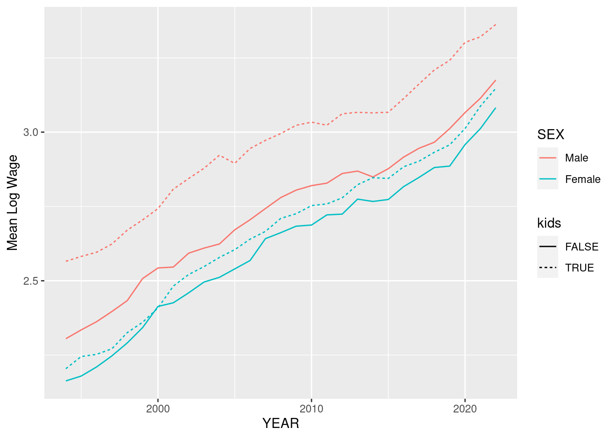

library(tidyverse)Working with Data in R and the Tidyverse
We are going to make use of a library called tidyverse which is very popular and can simplify working with and depicting data. If you are comfortable using R and prefer not to use these libraries that is totally fine.
Reading and Cleaning Data
First, we load the libraries we would like to use. If you are using the tidyverse for the first time you will need to install it by running:
```{r}
install.packages("tidyverse")
```Then:
to load the package.
Next, we want to load the data into memory. These data on wages comes from the Current Population Survey, administered by the Census Bureau and the Bureau of Labor Statistics. Learn more about the CPS here.
One convenient way to get this data is through IPUMS. Actually run here at the Minnesota Population Center. NOTE: if you want to know more about any of the variables we are using here, you can look them up on the IPUMS website, or consult the codebook.
Since the data is stored as a .csv file, we will use the command read.csv. Note that the file path below is written assuming that the data is stored in an adjacent folder called data. If you want to run this code, you have to make sure you are pointing to the directory where you have saved this data.
D <- read.csv("../data/cps-econ-4261.csv")For this exercise, we are going to just focus data from the years 1994 onwards. To drop other observations we can use the filter command:
D <- filter(D,YEAR>=1994)We are using these data to think about wages. Therefore I have already removed observations of individuals who are not working. However, there are still some issues to navigate. For instance, how do we compare wages for salaried workers to those who earn wages by the hour? Here we will impute wages for salaried workers by dividing their weekly earnings (EARNWEEK) by their reported hours of work (UHRSWORKT). For wage workers we use the variable HOURWAGE.
However if we look at the distributions of these variables, we notice there are some strange outliers:
ggplot(D,aes(x=UHRSWORKT)) + geom_histogram()`stat_bin()` using `bins = 30`. Pick better value with `binwidth`.ggplot(D,aes(x=EARNWEEK)) + geom_histogram()`stat_bin()` using `bins = 30`. Pick better value with `binwidth`.ggplot(D,aes(x=HOURWAGE)) + geom_histogram()`stat_bin()` using `bins = 30`. Pick better value with `binwidth`.This is because the CPS codes data that is missing for particular reasons as particular values. You always should be very cautious of this and read your data books carefully! In this case we’ll replace those missing data codes with the value NA which is a generic indicator for missing data. We use the function na_if to do this. The function mutate tells R to create new variables using those available in the dataframe D.
D <- mutate(D,EARNWEEK = na_if(EARNWEEK,9999.99),
UHRSWORKT = na_if(na_if(na_if(UHRSWORKT,999),997),0), #<- there are three values to code as missing here so we use na_if three times.
HOURWAGE = na_if(HOURWAGE,999.99))Now these variables look better:
ggplot(D,aes(x=UHRSWORKT)) + geom_histogram()`stat_bin()` using `bins = 30`. Pick better value with `binwidth`.Warning: Removed 44424 rows containing non-finite values (stat_bin).
ggplot(D,aes(x=EARNWEEK)) + geom_histogram()`stat_bin()` using `bins = 30`. Pick better value with `binwidth`.Warning: Removed 119097 rows containing non-finite values (stat_bin).ggplot(D,aes(x=HOURWAGE)) + geom_histogram()`stat_bin()` using `bins = 30`. Pick better value with `binwidth`.Warning: Removed 391529 rows containing non-finite values (stat_bin).Notice that we also coded hours as missing if they are equal to zero. These are not missing observations, but will create non-sensical imputed wages if individuals report positive earnings even though their usual hours of work are zero. Hence, we’ll drop these also.
To calculate wages, we will use the function case_when which creates new variables in a way that can depend on the values of another variable. In this case we will use PAIDHOUR - which tells us whether the worker earns an hourly wage or not - to tell us how we want to calculate the wage:
D <- mutate(D,Wage = case_when(PAIDHOUR==1 ~ EARNWEEK/UHRSWORKT,PAIDHOUR==2 ~ HOURWAGE))Piping
Taking stock, so far we did the following:
- Read in the data.
- Dropped observations from before 1994
- Re-coded specific values of some variables as missing.
- Coded a wage variable that depends on whether the worker is paid by the hour.
We can do all this more succinctly using something called “piping”. The operator %>% tells R to send the output of a function as the first argument of a function call on the next line. Since everything we did here was a modification to the dataframe D, we can pipe the operations in a sequence as:
D <- read.csv("../data/cps-econ-4261.csv") %>%
filter(YEAR>=1994) %>%
mutate(EARNWEEK = na_if(EARNWEEK,9999.99),
UHRSWORKT = na_if(na_if(na_if(UHRSWORKT,999),997),0),
HOURWAGE = na_if(HOURWAGE,999.99)) %>%
mutate(Wage = case_when(PAIDHOUR==1 ~ EARNWEEK/UHRSWORKT,PAIDHOUR==2 ~ HOURWAGE)) %>%
filter(!is.na(Wage))In the last two lines, we also dropped all observations where the new variable Wage is missing.
Summarizing data:
The function summarize provides a useful way for us to look at summary statistics for data. For example, we can use it to calculate the mean and the variance of log wages:
D %>%
summarize(m = mean(log(Wage)),v = var(log(Wage))) m v
1 2.881766 0.43848Suppose we wanted to make this calculation separately by year? We can do this using the group_by command, which tells R to perform operations separately by groups of variables:
D %>%
group_by(YEAR) %>%
summarize(m = mean(log(Wage)),v = var(log(Wage)))# A tibble: 29 × 3
YEAR m v
<int> <dbl> <dbl>
1 1994 2.31 0.355
2 1995 2.34 0.351
3 1996 2.35 0.327
4 1997 2.38 0.325
5 1998 2.43 0.358
6 1999 2.48 0.348
7 2000 2.52 0.333
8 2001 2.57 0.338
9 2002 2.61 0.357
10 2003 2.64 0.349
# ℹ 19 more rowsVisualizing data:
Suppose we wanted to visualize changes in wage inequality since 1994. ggplot, which is part of tidyverse, makes this really convenient. Here is one simple example:
D %>%
group_by(YEAR) %>%
summarize(m = mean(log(Wage)),v = var(log(Wage))) %>%
ggplot(aes(x=YEAR,y=v)) + geom_line()The function aes is a crucial piece that tells ggplot how particular objects in the plot are connected to variables in the data. In this case we needed to only specify the x and y variables. We can also specify, for example, the color of a variable if we need to:
D %>%
mutate(SEX = factor(SEX,levels=c(1,2),labels=c("Male","Female"))) %>% #<-
group_by(YEAR,SEX) %>%
summarize(m = mean(log(Wage)),v = var(log(Wage))) %>%
ggplot(aes(x=YEAR,y=m,color=SEX)) + geom_line() + ylab("Mean Log Wage")`summarise()` has grouped output by 'YEAR'. You can override using the `.groups`
argument.What does this graph tell us about wage gaps over time?
Here is one more example that plots the wages separately by fertility status. We use the variable NCHILD to proxy for this:
D %>%
mutate(kids = NCHILD>0,SEX = factor(SEX,levels=c(1,2),labels=c("Male","Female"))) %>%
group_by(YEAR,SEX,kids) %>%
summarize(m = mean(log(Wage))) %>%
ggplot(aes(x=YEAR,y=m,color=SEX,linetype=kids)) + geom_line() + ylab("Mean Log Wage")`summarise()` has grouped output by 'YEAR', 'SEX'. You can override using the
`.groups` argument.
What do you notice about the relative size of the wage gap in these two variables? If this looks a little crowded to you, you could also consider using the command facet_grid which arranges plots in a grid:
D %>%
mutate(kids = NCHILD>0,SEX = factor(SEX,levels=c(1,2),labels=c("Male","Female"))) %>%
group_by(YEAR,SEX,kids) %>%
summarize(m = mean(log(Wage))) %>%
ggplot(aes(x=YEAR,y=m,color=SEX)) + geom_line(size=1.5) + ylab("Mean Log Wage") + facet_grid(. ~ kids) #<- notice I increased the thickness of the lines also`summarise()` has grouped output by 'YEAR', 'SEX'. You can override using the
`.groups` argument.